How to Install & Use TrailPrint3D
▶ VIDEO
Installation
▼
- Download Blender from blender.org (Version 5.1 or higher)
- Download the Latest version of the Addon
- Open Blender and go to Edit → Preferences → Add-ons
- Popup opens. Go to Add-ons, click on the arrow on the top right, "Install from disk" and select the Addon you downloaded
- TrailPrint3D can update itself — open Edit → Preferences → Add-ons → TrailPrint3D and click Check for Updates whenever a new version comes out, no need to redownload manually
Getting your GPX File
▼
- Open the activity tracking app where your route is saved (e.g. Strava, Komoot, Garmin Connect, AllTrails)
- Navigate to the activity or route you want to turn into a 3D map
- Look for an Export or Download option. usually in the activity's settings or three-dot menu
- Select Export GPX and save the
.gpxfile to your computer
Basic Map Generation
▼
- Inside Blender, click the TrailPrint3D menu in the 3D Viewport's top bar
-
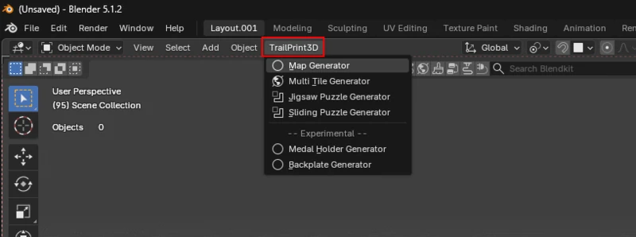
- Select the Map Generator to get started. It opens as an interactive map in your browser
- On first use, click Select Export Folder. This is where your files get saved. Once it's set, the button turns into Send to Blender
- Set the Size (mm) of the finished map and pick a shape (see Map Shape & Size)
- With a trail: click Import GPX and select your
.gpxfile. The trail is drawn onto the map and the area snaps around it automatically - Without a trail: search for a city or enter Lat/Lon to jump to a place, then click the pencil and drag on the map to draw your area
- Drag a corner of the orange box to resize it, or the handle in the middle to move it
- Switch to Draw from a center point to keep the middle of your shape fixed while resizing, so an imported trail stays centered
- Use the layer button to switch the map background (e.g. Satellite or Topographic) to see your area better
- Set the Resolution and pick your Map Elements, then click Send to Blender
- Once done, your files will appear in the export folder, ready to open in your slicer
- Your area and settings are saved, so reopening the generator brings you right back to where you left off
- Stuck? Click Tutorials in the generator for interactive step-by-step guides
- The same menu also has the Jigsaw Puzzle Generator, the Medal Holder and Backplate generators (experimental), and the Premium Multi Tile and Sliding Puzzle generators
-
Prefer the sidebar panel instead?
- Inside blender, the TrailPrint3D panel is located in the 3D Viewport sidebar
- Press N to toggle the sidebar open, then click the TrailPrint3D tab
- Click the folder icon next to File Path and select your
.gpxfile - Set an Export Path. this is the folder where your files will be saved after generation
- Adjust the settings to your liking (see the sections below for details on each setting)
- Click Generate and wait for the process to complete. generation time depends on resolution and map complexity
- Once done, your files will appear in the export folder, ready to open in your slicer
GIF
Map Shape & Size
▼
- Pick the outline of your map with the shape buttons in the Map Generator: Rectangle, Hexagon, Square, Circle or Octagon
- Hexagon, square, circle and octagon keep a 1:1 aspect ratio. Only the rectangle can be stretched freely
- Set the Size (mm). This is the physical size of the final printed map (e.g. 100 = 100 mm)
-
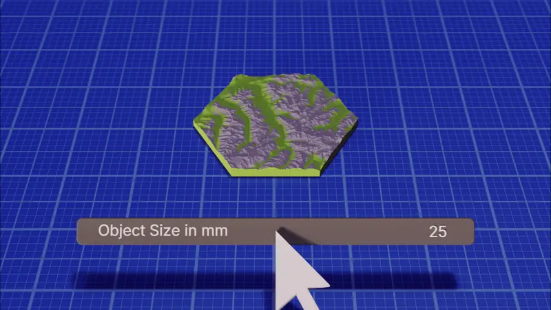
- Rotate the shape with the rotation handle on the map
-
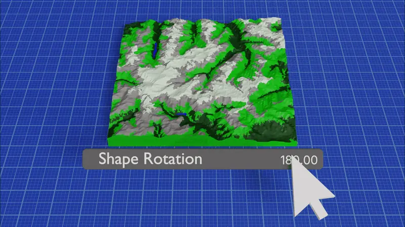
- Custom outlines: click GeoJSON to use a real boundary (country, region, park) as the map shape, or SVG to use any outline like a logo or an animal
- A GeoJSON boundary always sits exactly where the file puts it and can't be moved. An SVG shape can be moved and resized like any other shape
- Click Clear GeoJSON / Clear SVG Shape, or pick another shape, to go back to a normal shape
- Premium: import multiple GeoJSON files and merge them into one map
GIF
Resolution & Quality
▼
- The Resolution slider in the Map Generator sidebar controls the detail level of the terrain mesh. Higher values produce more precise elevation detail
-
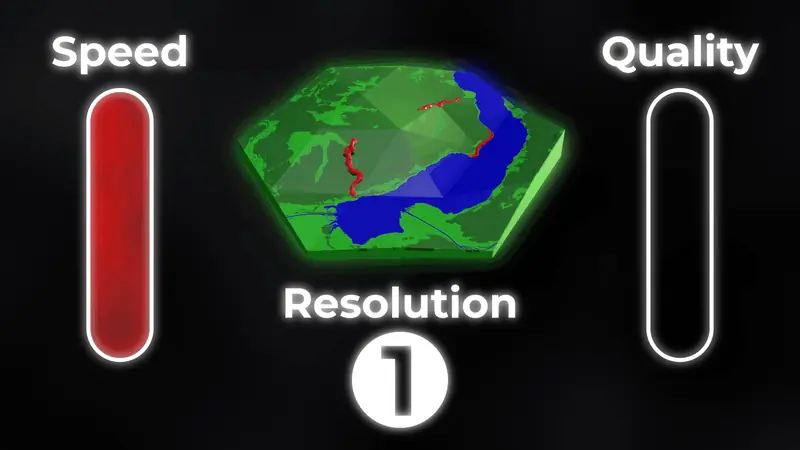
- INFO!: Resolution only affects the Terrain mesh. it has no effect on the detail of Elements like Forests or Water
- Recommended range: 6–8 for a good balance between quality and generation time
- Lower values (4–5) are useful for quick previews before committing to a final render
- A resolution of 7 can take longer to generate so be patient and do not close Blender while it runs
- For most prints, a value of 7 is sufficient and generates in a reasonable time
Exporting files
▼
- After generating a map, files are exported automatically to your export folder
- The generators use the Default Export Folder from the add-on preferences. Set it with Select Export Folder on first use; afterwards you can change or open it right below Send to Blender
- If you make any manual changes or use post-processing features, you have to export manually in the Advanced → Export tab
- There are 3 different file export options available
STL: Exports each object as a STL file. You have to color them manually in your slicer as STL files dont contain Color information.OBJ: Exports each object as a .OBJ file. This format contains color information and is needed if you painted the elements onto the map- It also comes with a .MTL file. dont separate these two files. the .MTL file holds the color data
.3mfExports all objects as a single .3mf file. It contains color data, relative position and it automatically grouped- It requires the 3mf Addon by Clonephaze. You can install it directly from the Export tab and once installed it's the default export option
- 3MF Print Profile: in the generator's Settings → Other tab, import a project
.3mfsaved in Bambu Studio, OrcaSlicer or PrusaSlicer. Your exported maps then open with your printer and filament already set up
Import to Slicer
▼
- Import the exported file(s) from your export folder
- STL: Select all
STLfiles together. The slicer will ask you if you want to view those files as a single object. Hit yes. otherwise they wont have the correct position to each other - .OBJ: Same as
STL. additionally, a window will popup allowing you to assing filaments to the colors - .3mf: Import the single
.3mffile — colors and grouping are all preserved automatically. The groups are overlapping so rearrange them - Info: Set the Wall-generator in your slicer to Arachne for better results when printing in multiple colors (less gaps between them)
▶ VIDEO
Improve Slicing Result
▼
- Change the Wall Generator from Classic to Arachne and the Min Feature Size to 1%
- → Improves quality of details and print fine details like rivers
Text-Based Shapes & Customization
▼
- Every map shape can get a Solid Plate around it with text, handy for a route name, distance, elevation gain or date
- In the Map Generator, click Backplate in the sidebar. A popup shows the settings and a top view of the result
- Choose a Font, the text layout (available layouts depend on the shape), and whether the text is Inset into the plate
- Not available for imported GeoJSON or SVG outlines
-
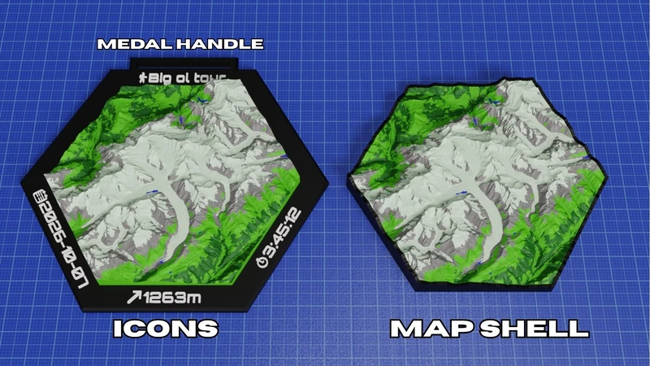
- Premium: Icons next to the text, a Medal Handle, and Shell mode (a base that follows the map's outline instead of a plate)
GIF
Elevation Scale & Path Settings
▼
- In the generators, these are found under Settings → Map
- Elevation Scale is a multiplier applied to the real-world elevation data:
- Increase it for flat routes (e.g. coastal or city rides) to make the terrain more visually interesting
- Decrease it for very steep or alpine routes to prevent extreme height differences that are hard to print
- A value of 1.0 represents true-to-life proportions
-
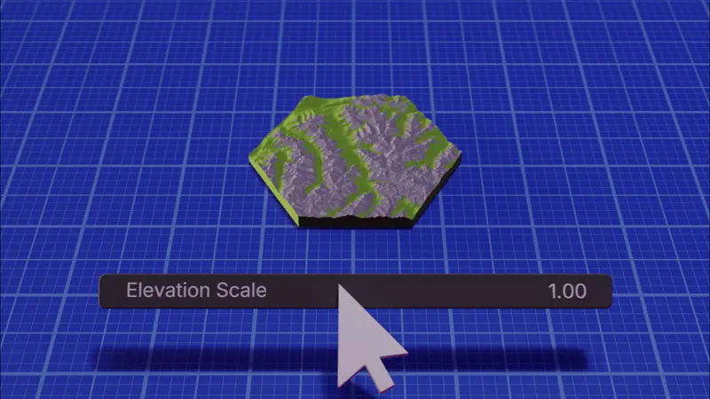
- Extra Map Height adds extra height below the terrain, and Smooth Terrain helps if the terrain looks blocky or shows grid lines
- Trail Thickness controls the thickness of the route line on the map surface
-
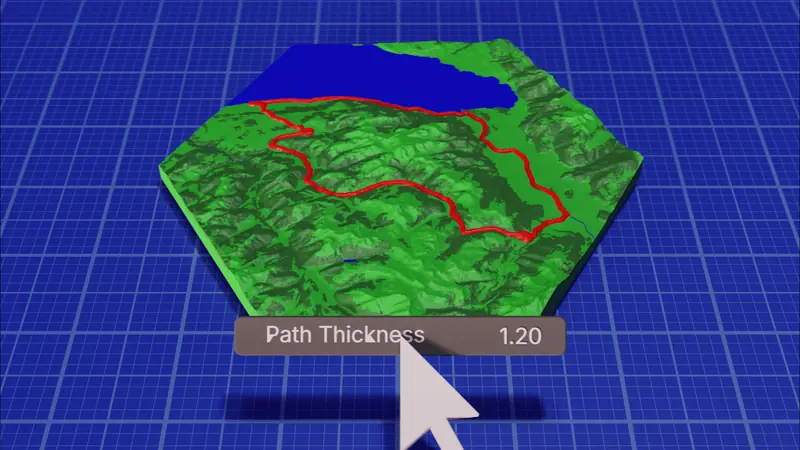
- Path Scale (sidebar only) sets the scale of the path relative to the object size. In the Map Generator you set this directly by resizing the area around your trail
-
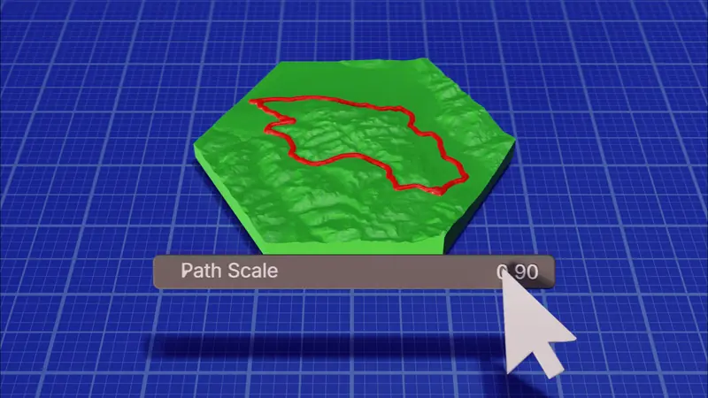
- e.g. 1 = Trail is as big as the map. 0.5 = Trail is about half the size of the map and shows more of the terrain around it
Elevation Data Sources & API Key
▼
- TrailPrint3D can pull elevation data from several sources, switchable in the generator's Settings → Other → Elevation Data (or Advanced → API in the sidebar): Mapterhorn (default, no setup required), Terrain-Tiles, OpenTopoData, Open-Elevation, and OpenTopography
- OpenTopography requires a free API key from portal.opentopography.org — without it, most datasets will fail to fetch. Set the key once in Edit → Preferences → Add-ons → TrailPrint3D → OpenTopography API Key
- If using OpenTopoData, pick the Dataset that best matches your region for more accurate elevation
- Elevation and map data both require an internet connection — if generation fails, check your connection or try a different data source
- You can also use your own GeoTIFF elevation file (DEM) as the terrain source
- If you see random holes in your terrain mesh, try enabling Disable Cache or clearing the cache with Clear Cache
Map Elements (Water, Forests, Cities)
▼
- Map elements are the parts of your map that get their own color, like water, forest or roads
- In the generators, the elements sit in the bar at the top of the map. Click an element to switch it on or off (green means on)
- Hover over Water or Roads to choose which kinds to include (e.g. Ponds & Lakes, Small/Big Rivers, Ocean, or Residential Roads)
- Click Settings to see every option for each element. Changes are saved right away
- Element Source: choose where the elements come from:
- OSM (OpenStreetMap): sharp shapes and includes roads and buildings. Best for smaller maps; gets slower the larger the map
- ESA (ESA WorldCover): made from satellite images. Softer shapes, no roads or buildings, but no map size limit
- Water: lakes, rivers and ocean. Flatten Water Surface keeps the water flat instead of following the terrain
-
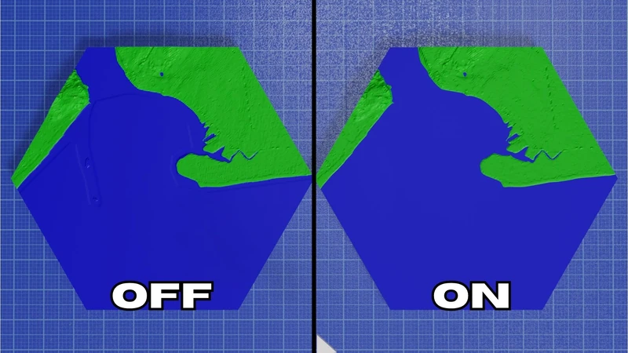
- Insert (mm) sinks the water a bit lower than the surrounding terrain
-
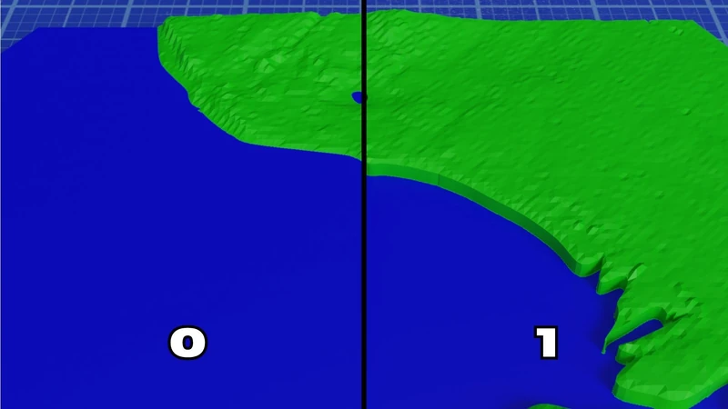
- Forest, Mountain, Scree, City Boundaries, Greenspace, Farmland & Glacier: each toggleable individually, with an Area Threshold to filter out small patches
- Buildings: extrudes building footprints to a configurable height, now with roof shapes
- Roads: choose which road types to include and control their Width Multiplier and Height
- Prefetch Elements (OSM only): loads the elements onto the map before you generate. Click an element on the map to leave it out, or Shift + drag a box to switch every element inside it off. Alt + click a road to remove the whole road
- Print Mode (in Settings → Elements): choose how the elements are printed:
- Paint: paints the elements directly onto the map surface, for multi-color printers. Quality depends on the map resolution
- Single Extruder: makes each element its own printable object with a matching cutout in the map, so you can print each color separately and assemble them afterwards (see Single Extruder Mode)
- Color Style (in Settings → Other): switch between preset color palettes for terrain, water, forests and the trail
- Element generation works best in well-mapped regions. Remote or rural areas may have less OSM data available
- INFO!: With OSM, very large maps can fail to fetch every element. For maps that cover ~100 km or more, switch to ESA
GIF
Single Extruder Mode (no multi-color printer)
▼
- Single Extruder Mode (formerly Single Color Mode) splits the map into separate pieces you print one color at a time and assemble afterwards
- There are 2 different options: one for the Trail and one for the Elements
- Trail: in the generator's Settings → Map, set Trail Appearance to Single Extruder Mode. The other options are Normal (trail is its own object) and Paint Trail (painted into the map texture)
- You can use Single Extruder Mode for the Trail and still choose to paint the elements onto the map
-
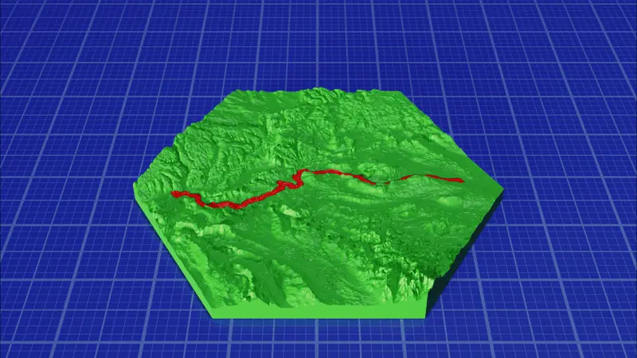
- Trail Height sets how far the trail strip rises above the terrain, and Tolerance sets the gap so the trail fits into its cutout
-

- Elements: in Settings → Elements → Print Mode, select Single Extruder and set the Element Tolerance
- Buildings and Roads are supported too. Roads have their own Cut Tolerance so the pieces fit
- Only available with OSM as the element source
Contour Lines
▼
- Contour lines trace elevation bands across the terrain, similar to a traditional topographic map
- Enable them in the Advanced Options -> Post-processing
- Contour Line Thickness: Controls the thickness of the line in mm
- Distance: Distance between two lines, in real-world meters
- Offset: Starting height of the lines, in real-world meters
- Use Real-World Meters: Toggle between real-world meter inputs and local model mm values
- Select your map and then click on "Add Contour Lines". After that manually export the Contour line object
More Post-Processing Tools
▼
- All of these are found in Advanced → Post-processing and must be exported manually afterward. they're not part of the automatic export
- Color by Height: colors the terrain in stacked height bands, useful for multi-color prints. Works with Single Extruder Mode and textured maps
- Magnet Holes: drills holes sized for your own magnets (set Height and Diameter), handy for multi-tile maps or removable pieces
- Dovetail Cutouts: adds interlocking dovetail joints along tile edges, useful when printing a map across multiple tiles
- Bottom Mark: engraves a small mark into the bottom face of the map, useful for labeling tiles
Pin Placement
▼
- Place Pin adds a small pin marker at a specific GPS coordinate on your map
- Found in Advanced → Pin
- Premium: Pin on City lets you drop a pin by typing a city name instead of coordinates
SVG & Text Import
▼
- Import a custom SVG outline (e.g. a logo or icon) directly onto your map as a 3D object
- Place custom 3D Text anywhere on the map. for example a title, date, or distance
- Found in Advanced → Post-processing → SVG / Text Import
- Click the ? icon next to the section for a short video walkthrough
Presets
▼
- Save your current settings as a named preset so you can reuse them for future maps
- Found in Advanced → Presets
- Load, save, or delete presets from the dropdown
PREMIUM
2D Heightmap Import
▼
- Import a 2D grayscale image and use it directly as a heightmap for the terrain
- Useful for custom or fictional terrain that isn't tied to real-world GPS data
- Found in Advanced → Post-processing → Import 2D Heightmap
PREMIUM
Multi-Generation
▼
- Multi-Generation allows you to load multiple GPX files and combine them into a single map
- In the Map Generator, click Import GPX and select several files at once. The area snaps around all trails
-
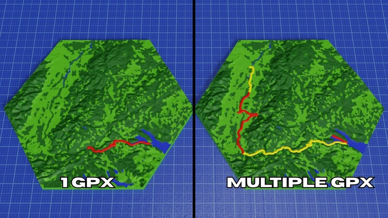
- Perfect for multi-day hikes, a season of rides, or any collection of routes in the same area
- Compatible with Single Extruder Mode
PREMIUM
Multi Tile Generator & Terrain Mode
▼
- Open TrailPrint3D → Multi Tile Generator to split a large area into several tiles that fit together
- Draw your area, set the Size, the number of segments and the spacing, then click Send to Blender
-
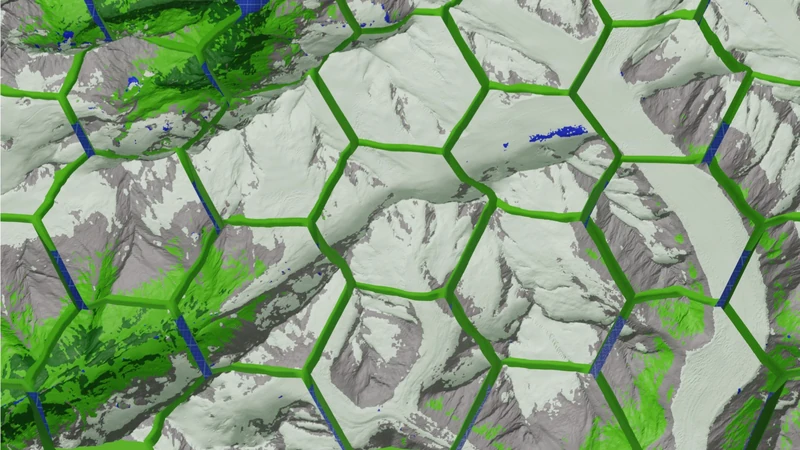
- Import a GeoJSON boundary to create multi tile maps in custom shapes, e.g. a whole country
- GPX trails can be imported here as well
- In the sidebar, Terrain mode (mode toggle at the top of the Create panel) still offers Center + Radius, 2 Corner Points and From Blank (create an empty tile, then Extend Selected Tile to grow it)
- Use Merge with Map to combine a GPX trail into an existing custom map, or Generate Just Trail to add only the path
- Great for building city, region, or country-scale maps piece by piece
FREE
Map Puzzles
▼
- Create jigsaw puzzles of any location
- Open TrailPrint3D → Jigsaw Puzzle Generator
- Click the pencil and draw your area, then set the Size of the whole puzzle and the Grid (columns × rows)
-
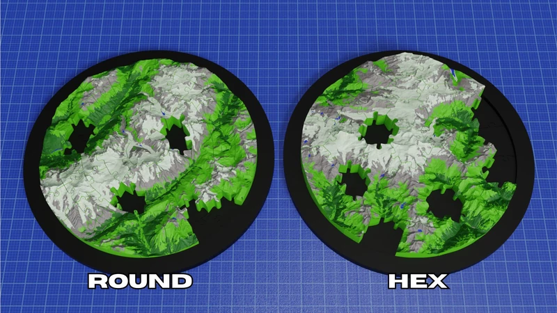
- Turn on elements to color the puzzle (Buildings and Roads are supported too)
- Tick Generate Holder to also get a tray for the finished puzzle. Its frame, corners and text are in Settings → Puzzle
- Click Send to Blender to generate the pieces
- Click Tutorials in the generator for a step-by-step guide to a 4 × 4 puzzle
- Premium: Hexagonal and Concentric-Ring piece shapes
- Premium: Sliding Puzzle Generator turns your area into a sliding tile puzzle, with text and Terrain-on-Frame options